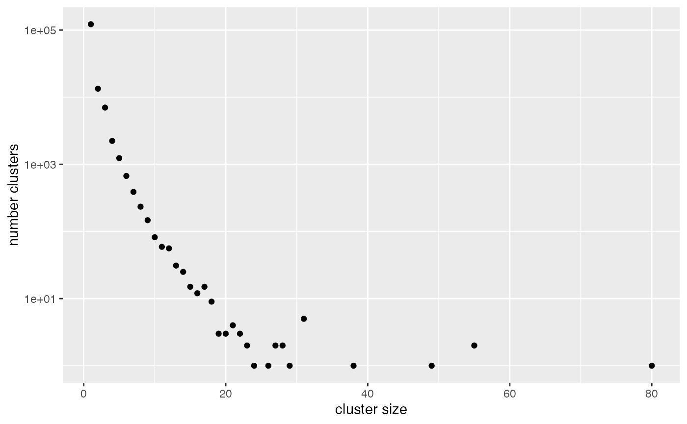
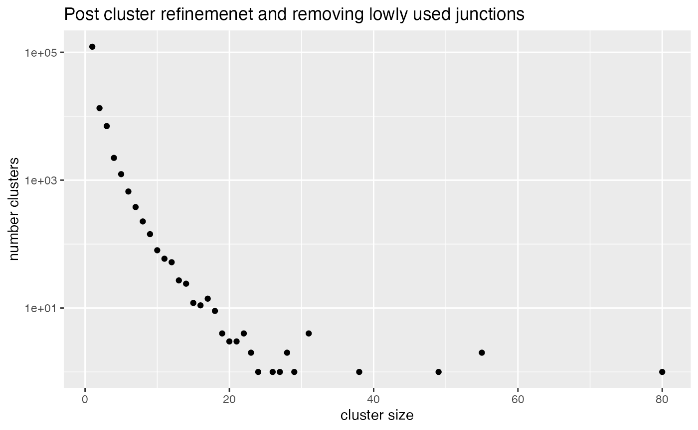
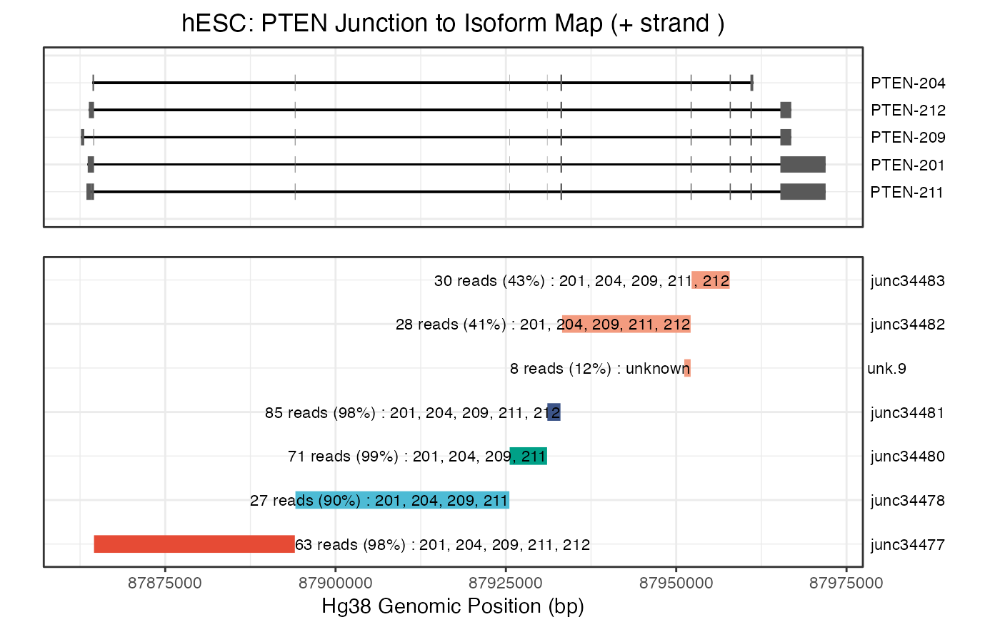
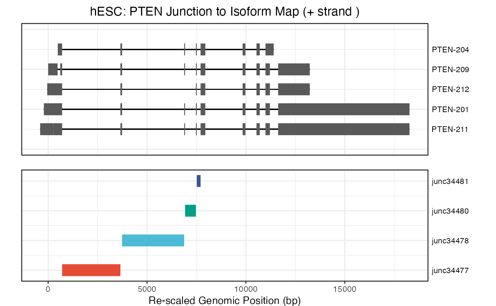
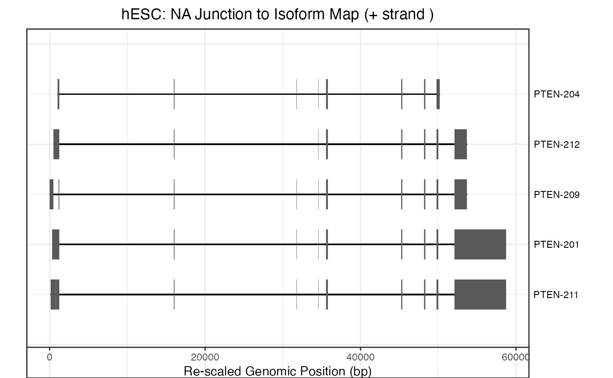

isoviz.Rmd
library(isoviz)
#> Loading required package: data.table
#> Loading required package: ggpubr
#> Loading required package: ggplot2
#> Loading required package: readr
#> Loading required package: tidyverse
#> ── Attaching core tidyverse packages ──────────────────────── tidyverse 2.0.0 ──
#> ✔ dplyr 1.1.2 ✔ stringr 1.5.0
#> ✔ forcats 1.0.0 ✔ tibble 3.2.1
#> ✔ lubridate 1.9.2 ✔ tidyr 1.3.0
#> ✔ purrr 1.0.1
#> ── Conflicts ────────────────────────────────────────── tidyverse_conflicts() ──
#> ✖ dplyr::between() masks data.table::between()
#> ✖ dplyr::filter() masks stats::filter()
#> ✖ dplyr::first() masks data.table::first()
#> ✖ lubridate::hour() masks data.table::hour()
#> ✖ lubridate::isoweek() masks data.table::isoweek()
#> ✖ dplyr::lag() masks stats::lag()
#> ✖ dplyr::last() masks data.table::last()
#> ✖ lubridate::mday() masks data.table::mday()
#> ✖ lubridate::minute() masks data.table::minute()
#> ✖ lubridate::month() masks data.table::month()
#> ✖ lubridate::quarter() masks data.table::quarter()
#> ✖ lubridate::second() masks data.table::second()
#> ✖ purrr::transpose() masks data.table::transpose()
#> ✖ lubridate::wday() masks data.table::wday()
#> ✖ lubridate::week() masks data.table::week()
#> ✖ lubridate::yday() masks data.table::yday()
#> ✖ lubridate::year() masks data.table::year()
#> ℹ Use the conflicted package (<http://conflicted.r-lib.org/>) to force all conflicts to become errors
#> Loading required package: Matrix
#>
#>
#> Attaching package: 'Matrix'
#>
#>
#> The following objects are masked from 'package:tidyr':
#>
#> expand, pack, unpack
#>
#>
#> Loading required package: igraph
#>
#>
#> Attaching package: 'igraph'
#>
#>
#> The following objects are masked from 'package:lubridate':
#>
#> %--%, union
#>
#>
#> The following objects are masked from 'package:dplyr':
#>
#> as_data_frame, groups, union
#>
#>
#> The following objects are masked from 'package:purrr':
#>
#> compose, simplify
#>
#>
#> The following object is masked from 'package:tidyr':
#>
#> crossing
#>
#>
#> The following object is masked from 'package:tibble':
#>
#> as_data_frame
#>
#>
#> The following objects are masked from 'package:stats':
#>
#> decompose, spectrum
#>
#>
#> The following object is masked from 'package:base':
#>
#> union
#>
#>
#> Loading required package: magrittr
#>
#>
#> Attaching package: 'magrittr'
#>
#>
#> The following object is masked from 'package:purrr':
#>
#> set_names
#>
#>
#> The following object is masked from 'package:tidyr':
#>
#> extract
#>
#>
#> Loading required package: ggsci
#>
#> Loading required package: cowplot
#>
#>
#> Attaching package: 'cowplot'
#>
#>
#> The following object is masked from 'package:lubridate':
#>
#> stamp
#>
#>
#> The following object is masked from 'package:ggpubr':
#>
#> get_legendOur package aims to help quantify and visualize the transcript isoforms that are present in your samples.
We start off by loading all our exon and intron coordinates. By default, this will use ‘gencode.v41.basic annotation’ data. You can also input your own psl file (gtf file as well in the future).
file_path <- system.file("data", "gencode.v41.basic.annotation.psl", package="isoviz")
gene_trans <- system.file("data", "gencode_v41_gene_transcript_convert.txt", package="isoviz")
all_coordinates <- isoviz_coords(file_path, gene_trans, input_type="psl") #use default genome .psl file
#> [1] "116566 transcripts with at least one intron!"
#> Adding missing grouping variables: `trans_id`
#> Adding missing grouping variables: `trans_id`
#> [1] "116566 transcripts with at least one intron!"
#> Rows: 116649 Columns: 6
#> ── Column specification ────────────────────────────────────────────────────────
#> Delimiter: "\t"
#> chr (6): gene_id, trans_id, gene_name, transcript_name, gene_type, transcrip...
#>
#> ℹ Use `spec()` to retrieve the full column specification for this data.
#> ℹ Specify the column types or set `show_col_types = FALSE` to quiet this message.
# Let's look at the exon coordinates
exon_coords <- all_coordinates[[1]]
print(head(exon_coords))
#> chr start end trans_id gene_id strand blocksizes
#> 1: chr1 11868 14409 ENST00000456328.2 ENSG00000223972.5 + 359
#> 2: chr1 11868 14409 ENST00000456328.2 ENSG00000223972.5 + 109
#> 3: chr1 11868 14409 ENST00000456328.2 ENSG00000223972.5 + 1189
#> 4: chr1 12009 13670 ENST00000450305.2 ENSG00000223972.5 + 48
#> 5: chr1 12009 13670 ENST00000450305.2 ENSG00000223972.5 + 49
#> 6: chr1 12009 13670 ENST00000450305.2 ENSG00000223972.5 + 85
#> blockstarts transcript_length blockends gene_name transcript_name
#> 1: 11868 2541 12227 DDX11L1 DDX11L1-202
#> 2: 12612 2541 12721 DDX11L1 DDX11L1-202
#> 3: 13220 2541 14409 DDX11L1 DDX11L1-202
#> 4: 12009 1661 12057 DDX11L1 DDX11L1-201
#> 5: 12178 1661 12227 DDX11L1 DDX11L1-201
#> 6: 12612 1661 12697 DDX11L1 DDX11L1-201
#> gene_type transcript_type
#> 1: transcribed_unprocessed_pseudogene processed_transcript
#> 2: transcribed_unprocessed_pseudogene processed_transcript
#> 3: transcribed_unprocessed_pseudogene processed_transcript
#> 4: transcribed_unprocessed_pseudogene transcribed_unprocessed_pseudogene
#> 5: transcribed_unprocessed_pseudogene transcribed_unprocessed_pseudogene
#> 6: transcribed_unprocessed_pseudogene transcribed_unprocessed_pseudogene
# Let's look at the intron coordinates
intron_coords <- all_coordinates[[2]]
print(head(intron_coords))
#> chr intron_starts intron_ends gene_id trans_id strand
#> 1: chr7 127588565 127589083 ENSG00000004059.11 ENST00000000233.10 +
#> 2: chr7 127589163 127589485 ENSG00000004059.11 ENST00000000233.10 +
#> 3: chr7 127589594 127590066 ENSG00000004059.11 ENST00000000233.10 +
#> 4: chr7 127590137 127590963 ENSG00000004059.11 ENST00000000233.10 +
#> 5: chr7 127591088 127591213 ENSG00000004059.11 ENST00000000233.10 +
#> 6: chr12 8941940 8942416 ENSG00000003056.8 ENST00000000412.8 -
#> gene_name transcript_name gene_type transcript_type
#> 1: ARF5 ARF5-201 protein_coding protein_coding
#> 2: ARF5 ARF5-201 protein_coding protein_coding
#> 3: ARF5 ARF5-201 protein_coding protein_coding
#> 4: ARF5 ARF5-201 protein_coding protein_coding
#> 5: ARF5 ARF5-201 protein_coding protein_coding
#> 6: M6PR M6PR-201 protein_coding protein_codingLet’s make a basic plot of the isoforms for the gene RBFOX2. We will also look at how to rescale the coordinates in case the gene has very long introns.
rbfox2_exons <- filter(exon_coords, gene_name == "PTEN")
rbfox2_introns <- filter(intron_coords, gene_name == "PTEN")
# let's rescale the intron coordinates but keep the relative exon alignments
# this step will return an updated dataframe of exon coordinates that we can use
# with our plotting function
rescaled_coords = isoviz_rescale_introns(rbfox2_introns, rbfox2_exons, width_rescale=10)
#> [1] "+"
#> [1] "PTEN-209"
#> [1] "getting ref coordinates"
#> [1] "PTEN-201"
#> [1] "PTEN-204"
#> [1] "PTEN-211"
#> [1] "PTEN-212"
#> [1] 1
head(rescaled_coords)
#> [[1]]
#> transcript_name chr new_e_start new_e_end strand start end
#> 1: PTEN-201 chr10 -218.9 705.1 + 87863624 87864548
#> 2: PTEN-201 chr10 3652.8 3737.8 + 87894024 87894109
#> 3: PTEN-201 chr10 6878.2 6923.2 + 87925512 87925557
#> 4: PTEN-201 chr10 7472.1 7516.1 + 87931045 87931089
#> 5: PTEN-201 chr10 7708.5 7947.5 + 87933012 87933251
#> 6: PTEN-201 chr10 9834.2 9976.2 + 87952117 87952259
#> 7: PTEN-201 chr10 10535.6 10702.6 + 87957852 87958019
#> 8: PTEN-201 chr10 10990.1 11215.1 + 87960893 87961118
#> 9: PTEN-201 chr10 11632.0 18276.0 + 87965286 87971930
#> 10: PTEN-204 chr10 485.1 705.1 + 87864328 87864548
#> 11: PTEN-204 chr10 3652.8 3737.8 + 87894024 87894109
#> 12: PTEN-204 chr10 6878.2 6923.2 + 87925512 87925557
#> 13: PTEN-204 chr10 7472.1 7516.1 + 87931045 87931089
#> 14: PTEN-204 chr10 7708.5 7947.5 + 87933012 87933251
#> 15: PTEN-204 chr10 9834.2 9976.2 + 87952117 87952259
#> 16: PTEN-204 chr10 10535.6 10702.6 + 87957852 87958019
#> 17: PTEN-204 chr10 10990.1 11406.1 + 87960893 87961309
#> 18: PTEN-209 chr10 0.0 476.0 + 87862637 87863113
#> 19: PTEN-209 chr10 610.1 705.1 + 87864453 87864548
#> 20: PTEN-209 chr10 3652.8 3737.8 + 87894024 87894109
#> 21: PTEN-209 chr10 6878.2 6923.2 + 87925512 87925557
#> 22: PTEN-209 chr10 7472.1 7516.1 + 87931045 87931089
#> 23: PTEN-209 chr10 7708.5 7947.5 + 87933012 87933251
#> 24: PTEN-209 chr10 9834.2 9976.2 + 87952117 87952259
#> 25: PTEN-209 chr10 10535.6 10702.6 + 87957852 87958019
#> 26: PTEN-209 chr10 10990.1 11215.1 + 87960893 87961118
#> 27: PTEN-209 chr10 11632.0 13231.0 + 87965286 87966885
#> 28: PTEN-211 chr10 261.1 705.1 + 87864104 87864548
#> 29: PTEN-211 chr10 3652.8 3737.8 + 87894024 87894109
#> 30: PTEN-211 chr10 6878.2 6923.2 + 87925512 87925557
#> 31: PTEN-211 chr10 7472.1 7516.1 + 87931045 87931089
#> 32: PTEN-211 chr10 7708.5 7947.5 + 87933012 87933251
#> 33: PTEN-211 chr10 9834.2 9976.2 + 87952117 87952259
#> 34: PTEN-211 chr10 10535.6 10702.6 + 87957852 87958019
#> 35: PTEN-211 chr10 10990.1 11215.1 + 87960893 87961118
#> 36: PTEN-211 chr10 11632.0 18276.0 + 87965286 87971930
#> 37: PTEN-211 chr10 -405.1 260.9 + 87863437 87864103
#> 38: PTEN-212 chr10 -48.9 705.1 + 87863794 87864548
#> 39: PTEN-212 chr10 3652.8 3737.8 + 87894024 87894109
#> 40: PTEN-212 chr10 7472.1 7516.1 + 87931045 87931089
#> 41: PTEN-212 chr10 7708.5 7947.5 + 87933012 87933251
#> 42: PTEN-212 chr10 9834.2 9976.2 + 87952117 87952259
#> 43: PTEN-212 chr10 10535.6 10702.6 + 87957852 87958019
#> 44: PTEN-212 chr10 10990.1 11215.1 + 87960893 87961118
#> 45: PTEN-212 chr10 11632.0 13231.0 + 87965286 87966885
#> transcript_name chr new_e_start new_e_end strand start end
#> blocksizes exon_num min_start max_end transcript_length
#> 1: 924 1 -218.9 18276.0 18494.9
#> 2: 85 2 -218.9 18276.0 18494.9
#> 3: 45 3 -218.9 18276.0 18494.9
#> 4: 44 4 -218.9 18276.0 18494.9
#> 5: 239 5 -218.9 18276.0 18494.9
#> 6: 142 6 -218.9 18276.0 18494.9
#> 7: 167 7 -218.9 18276.0 18494.9
#> 8: 225 8 -218.9 18276.0 18494.9
#> 9: 6644 9 -218.9 18276.0 18494.9
#> 10: 220 1 485.1 11406.1 10921.0
#> 11: 85 2 485.1 11406.1 10921.0
#> 12: 45 3 485.1 11406.1 10921.0
#> 13: 44 4 485.1 11406.1 10921.0
#> 14: 239 5 485.1 11406.1 10921.0
#> 15: 142 6 485.1 11406.1 10921.0
#> 16: 167 7 485.1 11406.1 10921.0
#> 17: 416 8 485.1 11406.1 10921.0
#> 18: 476 1 0.0 13231.0 13231.0
#> 19: 95 2 0.0 13231.0 13231.0
#> 20: 85 3 0.0 13231.0 13231.0
#> 21: 45 4 0.0 13231.0 13231.0
#> 22: 44 5 0.0 13231.0 13231.0
#> 23: 239 6 0.0 13231.0 13231.0
#> 24: 142 7 0.0 13231.0 13231.0
#> 25: 167 8 0.0 13231.0 13231.0
#> 26: 225 9 0.0 13231.0 13231.0
#> 27: 1599 10 0.0 13231.0 13231.0
#> 28: 444 2 -405.1 18276.0 18681.1
#> 29: 85 3 -405.1 18276.0 18681.1
#> 30: 45 4 -405.1 18276.0 18681.1
#> 31: 44 5 -405.1 18276.0 18681.1
#> 32: 239 6 -405.1 18276.0 18681.1
#> 33: 142 7 -405.1 18276.0 18681.1
#> 34: 167 8 -405.1 18276.0 18681.1
#> 35: 225 9 -405.1 18276.0 18681.1
#> 36: 6644 10 -405.1 18276.0 18681.1
#> 37: 666 1 -405.1 18276.0 18681.1
#> 38: 754 1 -48.9 13231.0 13279.9
#> 39: 85 2 -48.9 13231.0 13279.9
#> 40: 44 3 -48.9 13231.0 13279.9
#> 41: 239 4 -48.9 13231.0 13279.9
#> 42: 142 5 -48.9 13231.0 13279.9
#> 43: 167 6 -48.9 13231.0 13279.9
#> 44: 225 7 -48.9 13231.0 13279.9
#> 45: 1599 8 -48.9 13231.0 13279.9
#> blocksizes exon_num min_start max_end transcript_length
#>
#> [[2]]
#> chr start end strand transcript_name rescaled_length
#> 1: chr10 87864548 87894025 + PTEN-201 2947.7
#> 2: chr10 87894109 87925513 + PTEN-201 3140.4
#> 3: chr10 87925557 87931046 + PTEN-201 548.9
#> 4: chr10 87931089 87933013 + PTEN-201 192.4
#> 5: chr10 87933251 87952118 + PTEN-201 1886.7
#> 6: chr10 87952259 87957853 + PTEN-201 559.4
#> 7: chr10 87958019 87960894 + PTEN-201 287.5
#> 8: chr10 87961118 87965287 + PTEN-201 416.9
#> 9: chr10 87864548 87894025 + PTEN-204 2947.7
#> 10: chr10 87894109 87925513 + PTEN-204 3140.4
#> 11: chr10 87925557 87931046 + PTEN-204 548.9
#> 12: chr10 87931089 87933013 + PTEN-204 192.4
#> 13: chr10 87933251 87952118 + PTEN-204 1886.7
#> 14: chr10 87952259 87957853 + PTEN-204 559.4
#> 15: chr10 87958019 87960894 + PTEN-204 287.5
#> 16: chr10 87863113 87864454 + PTEN-209 134.1
#> 17: chr10 87864548 87894025 + PTEN-209 2947.7
#> 18: chr10 87894109 87925513 + PTEN-209 3140.4
#> 19: chr10 87925557 87931046 + PTEN-209 548.9
#> 20: chr10 87931089 87933013 + PTEN-209 192.4
#> 21: chr10 87933251 87952118 + PTEN-209 1886.7
#> 22: chr10 87952259 87957853 + PTEN-209 559.4
#> 23: chr10 87958019 87960894 + PTEN-209 287.5
#> 24: chr10 87961118 87965287 + PTEN-209 416.9
#> 25: chr10 87864103 87864105 + PTEN-211 0.2
#> 26: chr10 87864548 87894025 + PTEN-211 2947.7
#> 27: chr10 87894109 87925513 + PTEN-211 3140.4
#> 28: chr10 87925557 87931046 + PTEN-211 548.9
#> 29: chr10 87931089 87933013 + PTEN-211 192.4
#> 30: chr10 87933251 87952118 + PTEN-211 1886.7
#> 31: chr10 87952259 87957853 + PTEN-211 559.4
#> 32: chr10 87958019 87960894 + PTEN-211 287.5
#> 33: chr10 87961118 87965287 + PTEN-211 416.9
#> 34: chr10 87864548 87894025 + PTEN-212 2947.7
#> 35: chr10 87894109 87931046 + PTEN-212 3693.7
#> 36: chr10 87931089 87933013 + PTEN-212 192.4
#> 37: chr10 87933251 87952118 + PTEN-212 1886.7
#> 38: chr10 87952259 87957853 + PTEN-212 559.4
#> 39: chr10 87958019 87960894 + PTEN-212 287.5
#> 40: chr10 87961118 87965287 + PTEN-212 416.9
#> chr start end strand transcript_name rescaled_lengthWe will first need to load our leafcutter junctions that we obtained by running Regtools extract junctions on our BAM files. You can use one of our preloaded cell types or first run this on your own BAM file and then use as input for this function. We will look at junctions in hESC data. We will first need to run ‘minicutter’ to cluster the junction coordinates and obtain intron cluster events.
# load junctions for cell type of interest or input your own
junctions <- system.file("data", "hESC-MKNK2-G1_v41_basic.junc", package="isoviz")
# run minicutter to get clusters
intron_clusts <- isoviz_minicutter(juncs_file = junctions)
#> [1] "Printing summary of intron-cluster sizes = how many junctions across in clusters"
#> [1] "Printing summary of intron-cluster sizes = how many junctions across in clusters"
print(head(intron_clusts))
#> # A tibble: 6 × 10
#> chrom strand start end name readcount idx_start idx_end cluster_idx
#> <chr> <chr> <dbl> <dbl> <chr> <int> <int> <int> <dbl>
#> 1 chr1 + 16717 187231 JUNC000000… 6 1 5 1
#> 2 chr1 + 23782 194308 JUNC000000… 3 2 6 2
#> 3 chr1 - 90050 90287 JUNC000000… 1 17151 17152 7295
#> 4 chr1 - 136463 136562 JUNC000000… 8 17153 17155 7296
#> 5 chr1 - 136512 136904 JUNC000000… 2 17154 17159 7297
#> 6 chr1 - 136708 136904 JUNC000000… 1 17156 17159 7297
#> # ℹ 1 more variable: usage_ratio <dbl>Let’s take a look at how junctions were grouped into intron clusters. Note, some of these clusters will only contain one junction (singleton). You will have the option to change this when running isoviz_minicutter.
# For now we will use the expanded intron dataset with additional annotations by Megan
# We will need an additional function to add these annotations
intron_annotations <- system.file("data", "gencode_intron_all_data.rda", package="isoviz")
load(intron_annotations)
print(head(gencode_intron_all_data))
#> # A tibble: 6 × 10
#> chr junc_start junc_end gene_id strand junc_id gene_name gene_type
#> <chr> <dbl> <dbl> <chr> <chr> <chr> <chr> <chr>
#> 1 chr1 30039 30564 ENSG00000243485.5 + junc1 MIR1302-… lncRNA
#> 2 chr1 30667 30976 ENSG00000243485.5 + junc2 MIR1302-… lncRNA
#> 3 chr1 35174 35277 ENSG00000237613.2 - junc3 FAM138A lncRNA
#> 4 chr1 35481 35721 ENSG00000237613.2 - junc4 FAM138A lncRNA
#> 5 chr1 65433 65520 ENSG00000186092.7 + junc5 OR4F5 protein_…
#> 6 chr1 65573 69037 ENSG00000186092.7 + junc6 OR4F5 protein_…
#> # ℹ 2 more variables: junction_category <chr>, transcript_isoforms <chr>Let’s continue working on RBFOX2. Now we have to map the observed
junctions with their corresponding exons and transcript isoforms. To do
this, we will use the isoviz_map_junctions function. Make
sure to check strand of gene!
mapped_junctions = isoviz_map_junctions(cell_type = "hESC", rbfox2_introns, intron_clusts, gencode_intron_all_data)
#> [1] "removing junction IDs obtained from clustering introns, using default names from gencode file"
print(head(mapped_junctions))
#> # A tibble: 6 × 24
#> chr intron_starts intron_ends strand junc.counts idx_start idx_end
#> <chr> <dbl> <dbl> <chr> <dbl> <int> <int>
#> 1 chr10 87893773 87894025 + 1 37401 37402
#> 2 chr10 87864548 87894025 + 63 37397 37402
#> 3 chr10 87864548 87894025 + 63 37397 37402
#> 4 chr10 87864548 87894025 + 63 37397 37402
#> 5 chr10 87864548 87894025 + 63 37397 37402
#> 6 chr10 87864548 87894025 + 63 37397 37402
#> # ℹ 17 more variables: cluster_idx <dbl>, usage_ratio <dbl>,
#> # cluster.counts <dbl>, gene_id <chr>, trans_id <chr>, gene_name <chr>,
#> # transcript_name <chr>, gene_type <chr>, transcript_type <chr>,
#> # junction_category <chr>, junc_id <chr>, transcript_isoforms <chr>,
#> # junc.per.cluster <dbl>, junc.usage <dbl>, cell_line <chr>,
#> # transcript_targetable <chr>, isoform_expressed <chr>Now we are ready to make a plot!
isoviz_plot_juncs_to_iso(mapped_junctions, rbfox2_exons,
cell_type = "hESC",
junc_usage = 5, #min junc usage to be included
include_all_juncs = TRUE, intron_scale = "no")
#> Adding missing grouping variables: `cluster_idx`
#> Joining with `by = join_by(chr, intron_starts, intron_ends, strand,
#> junc.counts, cluster_idx, junction_category, junc_id, junc.per.cluster,
#> junc.usage)` Now let’s make the same plot but with scaled introns so that we can see the exons better! Note, this currently only works for junctions that we are able to annotate to transcript isoforms in the top plot!
isoviz_plot_juncs_to_iso(mapped_junctions, rbfox2_exons, rbfox2_introns,
cell_type = "hESC",
junc_usage = 50, #min junc usage to be included
intron_scale = "yes", intron_scale_width = 10,
include_all_juncs = TRUE)
#> [1] "+"
#> [1] "PTEN-209"
#> [1] "getting ref coordinates"
#> [1] "PTEN-201"
#> [1] "PTEN-204"
#> [1] "PTEN-211"
#> [1] "PTEN-212"
#> [1] 1
#> Adding missing grouping variables: `cluster_idx`
#> Joining with `by = join_by(chr, intron_starts, intron_ends, strand,
#> junc.counts, cluster_idx, junction_category, junc_id, junc.per.cluster,
#> junc.usage)`
isoviz_plot_juncs_to_iso(mapped_junctions, rbfox2_exons, rbfox2_introns,
cell_type = "hESC",
junc_usage = 5, #min junc usage to be included
intron_scale = "yes", intron_scale_width = 2,
include_all_juncs = FALSE,
include_specific_junctions = c("junc178144", "junc178139"))
#> [1] "+"
#> [1] "PTEN-209"
#> [1] "getting ref coordinates"
#> [1] "PTEN-201"
#> [1] "PTEN-204"
#> [1] "PTEN-211"
#> [1] "PTEN-212"
#> [1] 1
#> Adding missing grouping variables: `cluster_idx`
#> Joining with `by = join_by(chr, intron_starts, intron_ends, strand,
#> junc.counts, cluster_idx, junction_category, junc_id, junc.per.cluster,
#> junc.usage)`